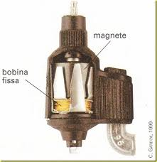
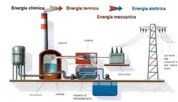
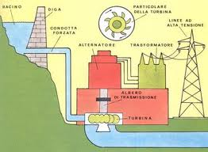
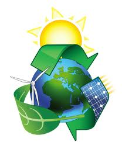
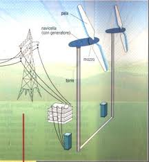
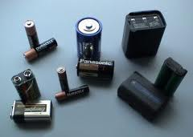

| Dinamo | Una dinamo è una macchina rotante per la trasformazione di lavoro meccanico in energia elettrica, sotto forma di corrente continua. |  |
| Centrali combustibili fossili | Questo tipo di centrale utilizza l'olio combustibile per alimentare il processo di combustione. Significa che ha un sistema di stoccaggio dell'olio dotato di serbatoi e sistema di distribuzione. Non richiede un sistema di trattamento del gas grezzo complesso. |  |
| centrale combustibile naturale | Le centrali termiche a carbone fanno parte della famiglia delle centrali a combustibili fossili, nelle quali l'energia contenuta nelle sorgenti primarie di energia del carbone e della lignite è convertita in energia elettrica. A causa dei residui generati da queste fonti di energia, sono richiesti dei sistemi di desolforazione dei gas di scarico particolarmente costosi. |  |
| centrali fonti rinnovabili alternative | Fonti alternative di energia sono invece tutte quelle fonti di energia "non fossili", ovvero diverse dagli idrocarburi o il carbone; rientra tra queste, ad esempio, anche l'energia nucleare, considerata alternativa all'uso di idrocarburi e carbone. |  |
| Centrali eoliche | Come per le centrali solari quelle eoliche non hanno residui, scorie o altri sottoprodotti. Il vento è gratis, quindi l'unica spesa è l'installazione e la manutenzione. Le centrali eoliche hanno un costo di costruzione abbastanza contenuto, 1.000.000 euro per un aerogeneratore da 1 MW, il quale tende però a lievitare in modo enorme per impianti di dimensioni adeguate alla produzione industriale.
VANTAGGI: la fonte utilizzata(vento) non si esaurirà mai
SVANTAGGI:Le centrali eoliche per produrre quantità di energia apprezzabili devono essere costituite da un numero consistente di generatori eolici, che devono essere distanziati per poter sfruttare il vento e per evitare un affollamento che sarebbe sgradevole. Inoltre, la disponibilità produttiva è molto bassa (25%) a causa della discontinuità del vento e, dunque, a parità di potenza nominale installata, una centrale eolica produce un quarto di una centrale nucleare ed un terzo di una centrale a gas, richiedendo in compensazione, dunque, un sovradimensionamento ed un sovracosto pari a 4 volte quello nominale per ottenere le stesse prestazioni effettive.
|
 |
| Accumulatori | Gli accumulatori di carica elettrica o batterie ricaricabili o pile secondarie o accumulatori (abbreviato in accu/akku) sono batterie la cui carica può essere completamente ristabilita mediante l'applicazione di un'adeguata energia elettrica. |  |